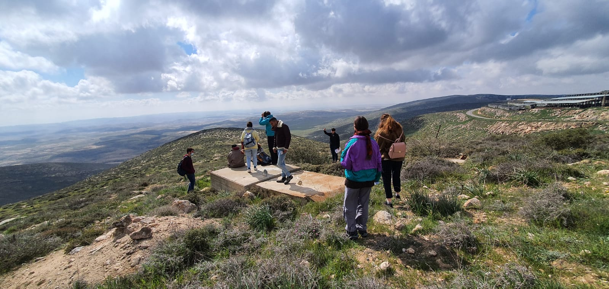
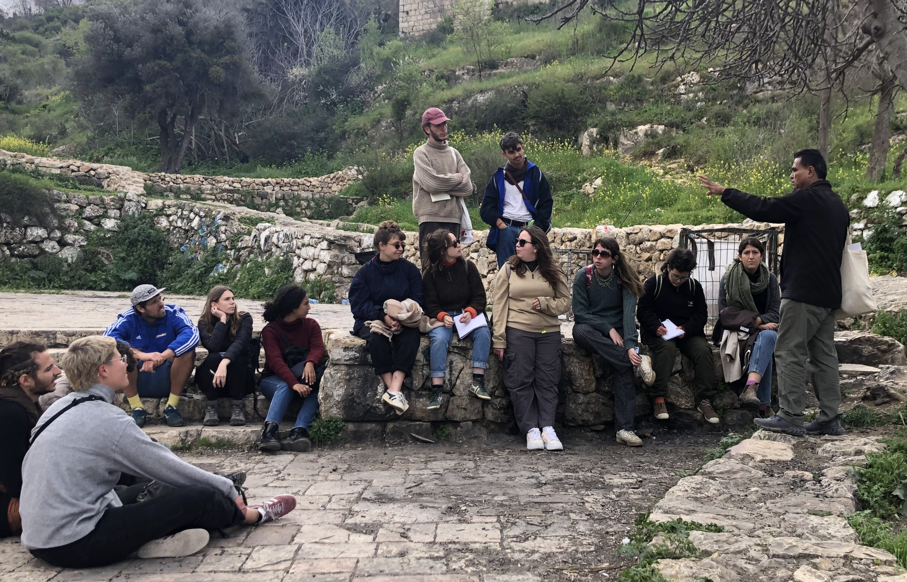

סמינר נוער
רגע לפני הצו הראשון: מרחב לעצור, לשאול ולבחון את המציאות. חינוך לאחריות אזרחית ומצפונית, במקום חינוך לציות.

התבגרות בצל הסכסוך והמיליטריזם
במציאות הישראלית, גיל ההתבגרות אינו רק שלב של התפתחות אישית, אלא תקופה שבה מערכת החינוך והחברה מתחילות בתהליך אינטנסיבי של "הכנה לצה"ל". בני הנוער מוכוונים למסלול אחד ויחיד, לרוב ללא כלים ביקורתיים לבחינת המציאות אליה הם נשלחים.
השיח הרווח במערכת החינוך הפורמלית מטשטש את מציאות הכיבוש, נמנע מעיסוק בשאלות מוסריות קשות, ומקדש את הכוח כפתרון בלעדי. נוער בעל רגישות הומניסטית וערכי שוויון מוצא את עצמו בודד, מבולבל ותחת לחץ חברתי עצום ליישר קו.
- schoolגילאיםכיתות ט'–יב'
- calendar_monthמתי16 באוקטובר 2026 – 29 בינואר 2027
- location_onאיפהתל אביב, ירושלים, בית ג'אלה, נווה שלום
הצורך הדחוף
מענה לשאלת הגיוס והשירות
הלב הפועם של הסמינר הוא ההתמודדות עם "הפיל שבחדר" – הגיוס הקרב. בגילאים 16–17, רגע לפני הצו הראשון והמיונים, הנערים והנערות עומדים בפני הדילמה המוסרית הגדולה ביותר של חייהם הצעירים. הסמינר נדרש כדי:
-
1
לפרק את האוטומט
לאפשר לנוער לעצור ולשאול: "לאן אני הולך? מה אדרש לעשות? מהם הקווים האדומים שלי?"
-
2
שיח על המחיר המוסרי
דיון פתוח ואמיץ על המשמעות של שירות צבאי בשטחים, על השליטה באוכלוסייה אזרחית, ועל ההשלכות הנפשיות והמוסריות של לקיחת חלק במנגנון הכיבוש.
-
3
לגיטימציה לספק ואלטרנטיבות לשירות צבאי
יצירת מרחב בטוח שבו מותר להביע ספק, לדבר על אי ציות אזרחי בזמן משבר, ועל דרכים נוספות לתרום לחברה מבלי לוותר על עמוד השדרה המוסרי.
המעשה החינוכי
חינוך ביקורתי ופוליטי
בניגוד לחינוך לציות, מדרשת דרור מציעה חינוך לאחריות אזרחית ומצפונית.
-
visibility
חשיפת המציאות
סיורים בשטח כדי לראות את המציאות שמעבר לקו הירוק, והיכרות עם הנרטיב הפלסטיני שנעדר מספרי הלימוד.
-
shield
כלים להתמודדות
איך עומדים מול לחץ חברתי? איך מנהלים שיח פוליטי אלטרנטיבי בתוך סביבה עוינת?
-
favorite
סולידריות קבוצתית
ההבנה ש"אני לא לבד". יצירת קהילה של בני נוער ששותפים לאותם ערכים, המהווה רשת תמיכה מול הזרם המרכזי.
מבנה התכנית
- 6מפגשים בימי שישימהבוקר עד הצהריים
- 2סופי שבוע עם לינהאחד בבית ג'אלה ואחד בנווה שלום, בהוסטל
- 1סיור בחברוןבהובלת ארגון שוברים שתיקה

מידע להורים
התכנית מבוטחת לחלוטין, מלווה על ידי 2 מדריכות מקצועיות ומאושרת על ידי כל הגורמים הרלוונטיים. ניתן ליצור איתנו קשר בכל שאלה ותהייה.
שאלות ותשובות
האם צריך ידע מוקדם?expand_more
ממש לא, אנחנו מספקים את כל הידע הדרוש.
כמה משתתפים בקבוצה?expand_more
התהליך הקבוצתי והגיבוש הם ליבת התכנית, ולכן הקבוצה היא אינטימית: בין 12 ל-17 משתתפים.
הסמינר כולל לינה?expand_more
כן, בנוסף ל-6 מפגשים חד-יומיים, יהיו גם שני סופי שבוע בהוסטל בבית ג'אלה ובנווה שלום.
יהיו סיורים בשטחים?expand_more
כן, יהיה סיור אחד בהובלת ארגון שוברים שתיקה בעיר חברון. לפרטים נוספים צרו איתנו קשר.
איפה נרשמים?expand_more
לחצו ממש כאן לטופס מתעניינות ומתעניינים.